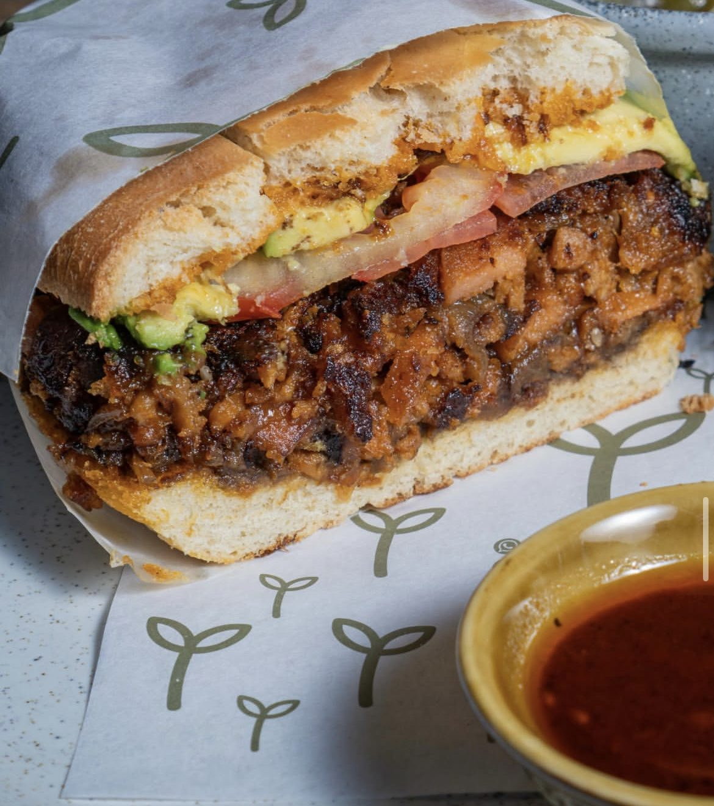
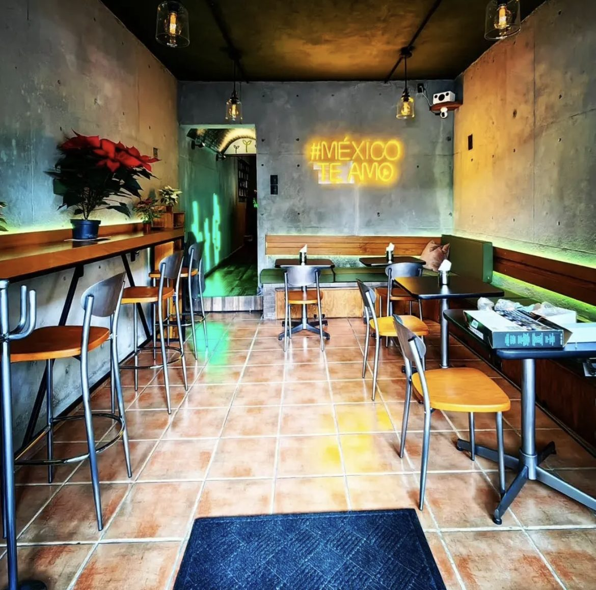
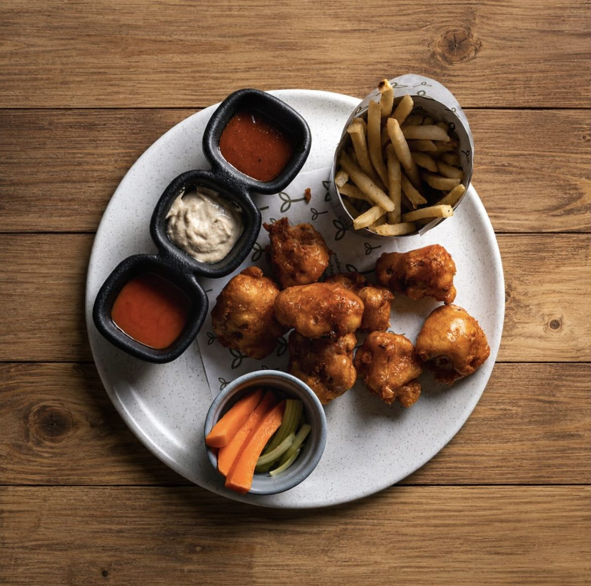

Cocina mexicana 100% vegana · Condesa
Tortas, quesabirria de setas, pambazos, chilaquiles y desayunos con quesos veganos hechos en casa. Café orgánico de Chiapas y pan recién horneado.


Nosotros
Somos un negocio familiar 100% vegano. Cocinamos los sabores de siempre de la comida mexicana, sin nada de origen animal, con ingredientes frescos y mucho cariño. Ven a desayunar, a comer o por un café con algo dulce.
Ver la cartaLo que dicen nuestros clientes
“Uno de mis lugares favoritos de la CDMX: comida de calidad hecha con cuidado y pasión. Negocio familiar con un ambiente muy amable.”
Reseña en Google“Una comida fantástica de principio a fin. Los platillos son pensados y están presentados de forma hermosa.”
Reseña en Google“Un gran hallazgo de comida mexicana vegana en la Condesa. Excelente servicio y hospitalidad. Sabores memorables.”
Reseña en GoogleVisítanos
